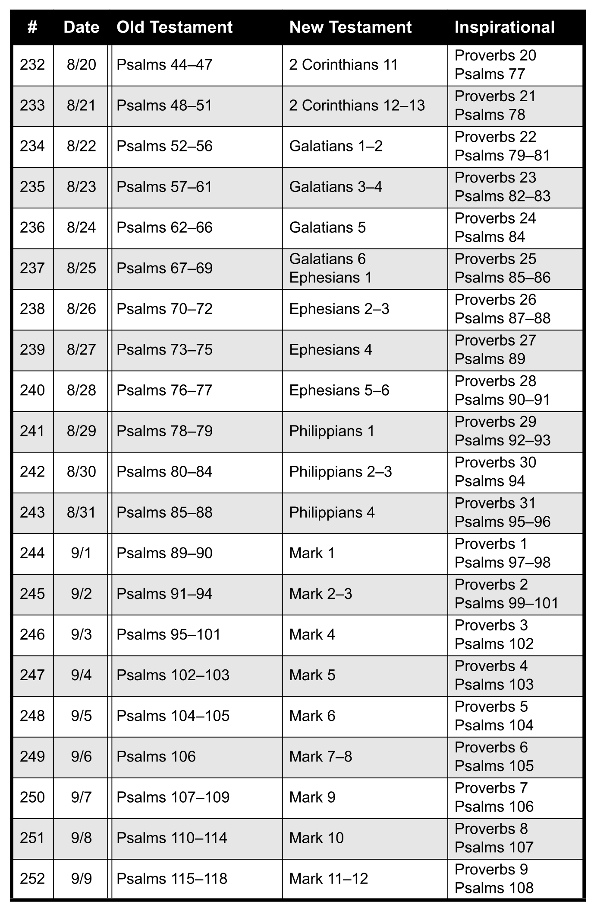

Berean Bible Schedule
Organization
Distributed Gospels
How to Use
As a 1-year plan
As a 2-year plan
As a 3-year plan
As a 4-year plan
Readings
By Date
Jan-01 thru Jan-21
Jan-22 thru Feb-11
Feb-12 thru Mar-04
Mar-05 thru Mar-25
Mar-26 thru Apr-15
Apr-16 thru May-06
May-07 thru May-27
May-28 thru Jun-17
Jun-18 thru Jul-08
Jul-09 thru Jul-29
Jul-30 thru Aug-19
Aug-20 thru Sep-09
Sep-10 thru Sep-30
Oct-01 thru Oct-21
Oct-22 thru Nov-11
Nov-12 thru Dec-02
Dec-03 thru Dec-22
Dec-23 thru Dec-31
By Day Number
001-021
022-042
043-063
064-084
085-105
106-126
127-147
148-168
169-189
190-210
211-231
232-252
253-273
274-294
295-315
316-336
337-356
357-365
About
Berean Bible Schedule
Readings
By Day Number
232-252
232-252
¶
